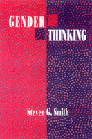

The first comprehensive philosophical exploration of the concept of gender
The first comprehensive philosophical exploration of the concept of gender


 The first comprehensive philosophical exploration of the concept of gender
The first comprehensive philosophical exploration of the concept of gender

|  |
Gender ThinkingSteven G. Smithpaper EAN: 978-0-87722-964-3 (ISBN: 0-87722-964-3) |
"This is quite an extraordinary piece of sustained 'thoughtwork,' laying out its own weave of analysis, synthesis, and proposal in conversation with a wonderful array of other works and positions. The depth and care of engagement with the problem and promise of rethinking humankind with respect for gender marks is as an accomplishment that makes a crucial point: that thinking about the human without thinking as gendered creatures about gender is both impossible and, as we might say, in bad faith. Thus, the book helps us take a step toward rectifying what we think about, who and what we think as, when we engage in the curious reflexivity of thinking about our own humanity."
—Elizabeth Minnich, Union Institute, author of Transforming Knowledge
How can we accept the gender system in view of its ills? Yet, are we really at liberty to abolish gender differences, "when the gender system gives us benchmarks of personal identity and worth along with primary channels in which to pursue the rewards of love?" With this double question, Steven G. Smith introduces his inquiry into the idea of gender and how it is implicated in love, respect, equality, and personal character. Gender Thinking is the first comprehensive philosophical exploration of the concept of gender Asking the question, what is gender?—that is, what sort of thing do we take femininity and masculinity to be?—Smith considers how gender thinking is interwoven with ideas about human nature. He suggests ways in which ideas about race, class, culture age, temperament, and sexual orientation can be understood from clues found in gender thinking. And he calls for a renegotiated procreative partnership between women and men as the key to the redemption of gender.
Preface
A Prologue on Democracy
1. The Two Sides of Gender Thinking
Positive Gender Thinking •
Critical Gender Thinking •
Implications for Our Study
2. On Conceiving the Human
The "Human" •
"Nature" •
Following Nature •
Gender as an Anthropological Theme
3. Gender and Humanity
The Problem: How to Behave •
How Gender Qualifies Gender •
Gender and Central Human Projects •
Gender and Other Human Kinds Compared •
Human Nature as an Endowment of Diversities
4. The Sex "Basis" of Gender
The Problem of Junction Between Intentional and Descriptive Concepts •
The Structure of Embodiment •
Qualifications of Intention by Sex •
Gender and Biological Facts •
Human Nature as Animal Nature: Human Biology and Anthropology •
Human Nature as animal nature: The Beast Within •
The Case of Sexual Jealousy •
Human Nature as Sexual Consistency: The Racial Parallel
5. Gender, Valuation, and Selfhood
The Attractions of Gender and "Finer Feelings": Kant •
The Structure of Valuing •
A Puzzle: How can a Valuer Value a Different Way of Valuing? •
The Gendering of Ethics: Gilligan •
Pornography and Other Pathologies of Gender Valuation •
Androgyny and Perplexity •
Gender Character and "True Self" •
Gendered Selfhood and the Asymmetry Problem in High Noon •
Human Nature as a Set of Gendered M�tiers
6. Gender and Duality
The Problem: How to Think •
Structures of Duality •
Metaphysical Gender-Duality Theories: Hegel and Levinas •
Theological Gender-Duality Theories: The Shakers and Paul •
Social-Scientific Gender-Duality Theories: Freud and L�vi-Strauss •
Human Nature as a Harmony of the Sexes and Genders
7. Gender and Procreation
The Relevance of Procreation to Gender and Human Nature •
The Structure of Procreative Activity •
Generationality, Potentiation, and Determination •
Gender and Issues of Procreative Choice
Conclusion: Realizing Sex
Realized Imaginatively •
Realized Intellectually •
Realized Spiritually •
Realized Practically
Notes
Index
Steven G. Smith is Associate Professor of Philosophy and Religion at Millsaps College and author of The Concept of the Spiritual: An Essay in First Philosophy (Temple).
General Interest
Philosophy and Ethics
© 2015 Temple University. All Rights Reserved. This page: http://www.temple.edu/tempress/titles/939_reg.html.